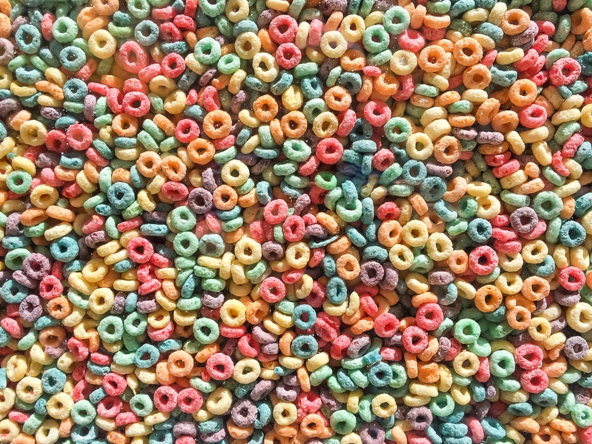
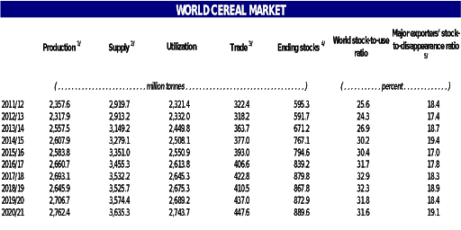
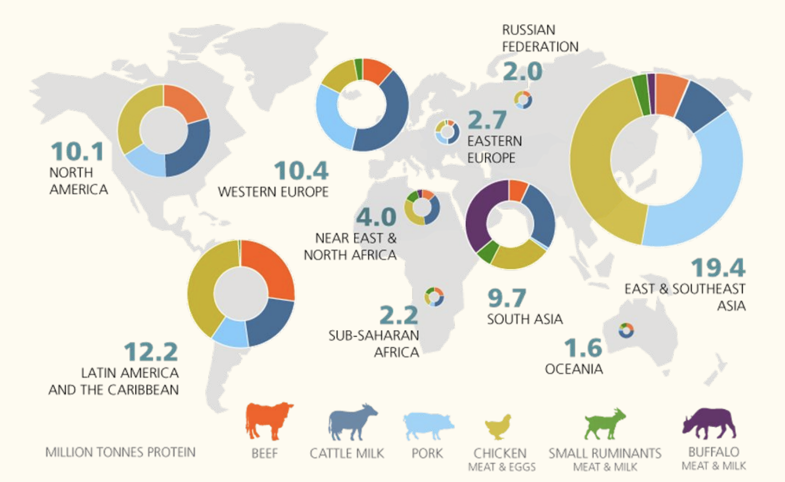
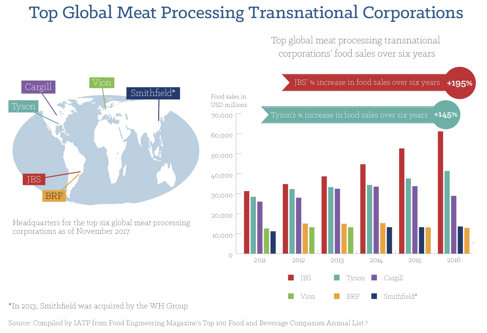
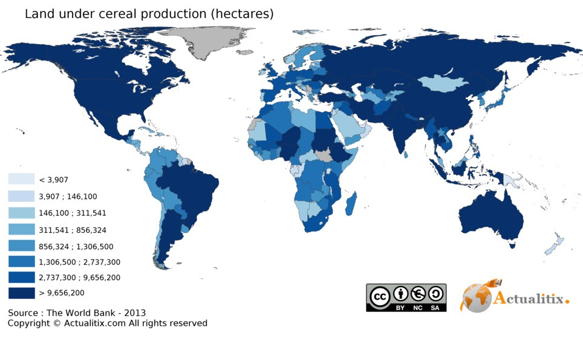
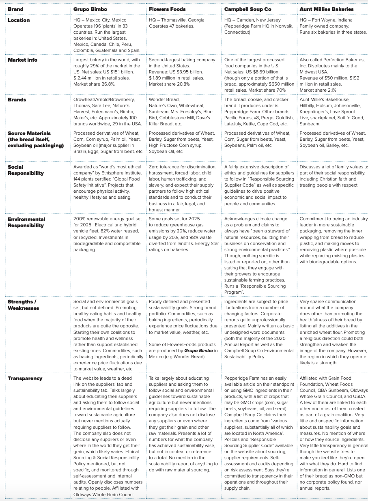
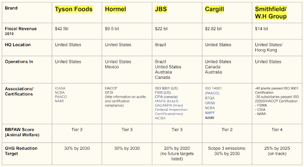
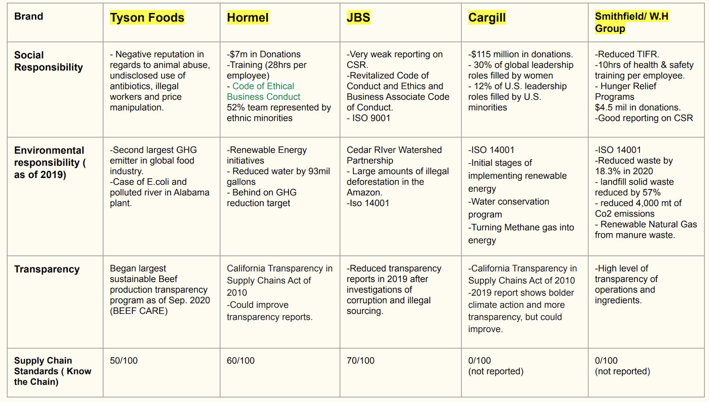

Definition

Highly processed foods are multi-ingredient mixtures that do not resemble their original plant or animal source, where moderately processed foods are usually still somewhat resemble their source, but with additives.
Minimally processed foods have not been altered much at all from their original state, like bagged salads and frozen meat and eggs, and basic processed foods have been changed in some way but are single-ingredient foods, like sugar, flour, and oil.
This page will address the following processed foods:
- Bread
- Processed Meat
- Cereal
Bread:
Processed Meat: Processed meat is meat that has been preserved by curing, salting, smoking, drying or canning. Food products categorized as processed meat include:
- Sausages, hot dogs, salami.
- Ham, cured bacon.
- Salted and cured meat, corned beef.
- Smoked meat.
- Dried meat, beef jerky.
- Canned meat.
On the other hand, meat that has been frozen or undergone mechanical processing like cutting and slicing is still considered unprocessed.
Cereals:
Supply Chain Overview
Bread
One of the most commonly consumed highly processed foods is bread. Hence choosing to look into some of the largest bread producing companies in the world and in the US to see if I could find out where each company sources their grain and ingredients from.
Wheat is the main ingredient in bread, pasta, and pastries and the main food source across the globe. While wheat grows in many parts of the world, mainly in the northern hemisphere, most countries do not grow enough wheat to satisfy their own populations. The US is the largest exporter of wheat to the rest of the world, according to National Geographic. Approximately 50% of the wheat grown in the US is exported, 37% is consumed in the US, 10% is used for animal feed, and 3% is used for seed.
One of the more interesting things in the processing of wheat is the creation of enriched wheat flour. Basically what it means is that you restore the lost nutrients (like iron and B vitamins; folic acid, riboflavin, niacin, and thiamine) to the wheat after they’ve been removed as part of the process of making the grain more shelf stable, where the bran and germ are removed from the wheat, leaving the endosperm. This is then bleached with a chemical process, further reducing the nutritional content of the wheat. According to the Food Fortification Initiative, the United States are leaders in global grain fortification and is one of very few countries in the world that has legislative requirements to fortify wheat flour, maize flour, and rice. A statistic that when looked it isn’t all too confidence-inspiring, considering grains have been grown and eaten all over the world for centuries and we’ve done just fine without deconstructing and reconstructing grains. Looking at the current health issues in the US, one would be amiss to not try to look at the correlations with our consumption of processed foods.
Soy and soybeans have been cultivated in Asia cultures for centuries and are still one of the world’s most important food crops today. A lot of soybeans are grown in South America (mainly Brazil and Argentina), but the US is still the leading global soybean producer, mainly grown in the Midwest and most often in rotation with corn. Most of the soybeans grown in the US are sold domestically to animal feed millers, food processors, and growing biodiesel industry. In bread, it is frequent as soybean oil.
Palm oil is another type of oil that is often used in bread, as well as nearly 50% of packaged highly processed foods and other goods, thanks to its shelf-stable qualities, stable at high temperatures, and spreadable at room temperature. Indonesia and Malaysia produce over 85% of global palm oil. Palm oil is a very efcient oil crop, producing more per land area than other vegetable oil crops. Palm oil is one of the most controversial crops currently, due to being a driver for deforestation and habitat loss in very biodiverse regions, as well as child labor and exploitation.
Corn often shows up in bread in the form of high fructose corn syrup. The US is the largest corn producer in the world, most of which is grown in the west/north-central Iowa and east central Illinois. Approximately 13% of the annual corn yield is exported, while a large amount is used for animal feed, and ethanol, amongst a whole array of other additives, components, and ingredients derived from corn. Corn is grown as a mono-crop, often in rotation with soy.
Sugar beets are grown in the US, but not enough to satisfy the country’s demands, so the sugar from beets is also imported. Russia and France have the highest sugar beet production in the world. Approximately 95% of sugar beets grown in the US come from GMO-seed these days (glyphosate-resistant seeds courtesy of Monsanto) and are often grown as part of a crop rotation cycle. The beets are processed into sugar (sucrose) as well as molasses, originally a waste product, but is now used both in bread and baked goods, as well as animal feed.
Processed Meat
The global processed meat market was valued at US$ 665 Billion in 2019. The market is projected to reach levels worth US$ 1,327 Billion by 2025, registering a CAGR of around 12% during 2020-2025. The rapid growth of the food processing industry, along with an increasing demand for animal-based protein products, represent the key factors driving the growth of the market. Owing to hectic working schedules and changing dietary patterns of the consumers, there is an increasing demand for ready-to-eat convenience food products. Furthermore, rising nutritional awareness among consumers and the availability of nutrient-rich packaged processed meat products have also favored the market growth. Other factors, such as rising population and increasing expenditure capacity of the consumers, along with the availability of frozen products, are projected to drive the market in the coming years.
Negative Externalities of Processed Meat Industry:
- Large amount of Water Used
- Water Pollution ( manure runoff)
- Land Use and Deforestation
- Methane Gas- Contributing to Greenhouse Gasses
- Large Energy Demands (mostly non-renewable energy)
- Loss of Biodiversity
- Air Pollution
- Chronic health-related diseases
- Production of super viruses such as H1N1
- Animal Abuse
Cereals

See cereal production per year in the attached table.
Recent & Relevant News
Bread
Processed Meat
Cereals
Legal Issues & Major Controversies
Bread
Processed Meat
Cereals
Mapping the Supply Chain
Bread
Processed Meat

See meat production infographic, and top meat processing corporations chart.

Cereals

See map of land use for cereal production.
Supplier Engagement Model
Bread
Processed Meat
Cereals
Governance
Bread
Processed Meat
Cereals
Benchmarks
Bread

Processed Meat
The market structure is fragmented owing to the presence of various local and global players in the market. These manufacturers are focusing on expanding their production capacity by new mergers and acquisitions. North America is expected to hold the highest market share in 2019. The prominent market player are as following:
- Hormel Foods Corporation
- Cargill
- Foster Farms
- JBS S.A.
- Tyson Foods Inc.
- Smithfield Foods, Inc.
- Purdue Farms
- Foster Farms
Market Monopolization: The processed food market is dominated by five players who maintain numerous processed food brands.
- Hormel:
** Applegate ** Skippy ** Columbus ** Justins’s ** Jennie-O ** Herdez ** Spam
- Tyson:
** Jimmy Dean ** Hillshire Farm ** Sara Lee ** Aidells ** Star Ranch Angus ** Pierre ** Wunderbar ** Bryan
- JBS:
** 5 star beef ** Grass Run Farms ** Chef’s exclusive beef ** Aspen Ridge ** Blue Ribbon Beed ** Black Angus
- W.H Group:
** Farmer John ** Armour ** Margherita ** Healthy Oats ** Pure Farms ** Saags’ ** Captain Morgan ** Diner Bell
- Cargill:
** Purina ** Nutrena ** Ewos ** Provimi ** Diamond V


Cereals
- Post Holding inc.
- Kellogg's company
- Nestle Food Kenya Limited
- Bob red Mills
The selected cereal companies have a high profile in the cereals supply chain. The main Raw material across the industry is wheat, maize, rice, and sugar.
From the benchmark, all the companies are into observing a sustainable supply chain and each of them has taken various steps towards it.
The major steps include; reduction of water consumption in their production, reducing waste dumping by enhancing recycling and re-using strategies, reducing the emission of GHG by a reasonable rate, and the use of clean energy to reduce pollution.
Each of the companies has several business practices that ensure a streamlined supply chain. This involves employee relations, supplier relations, and checking on the community’s welfare around these industries.
Across the interviewed companies, their strengths cut along clean production strategies and ingredient retention. The weaknesses revolve around acquiring better supply chain strategies that reduce cost. This may be in production, transport, and distribution.
| Detail | Post Holding | Kellogg | Bobs Red Mill | Nestle Company |
| Location | St. Louis, Missouri: America | Battle Creek, Michigan, United States | Milwaukie, Oregon, United States | Nairobi, Kenya |
| operating profit | $781 million | $1401 million | not available | 16.3 million |
| sales revenue | $5.7 billion | $13,578million | not available | 92.6 million |
| Main raw materials | grains, nuts,honey,cocoa | wheat, corn, cocoa, rice and sugar | wheat, corn, sugar, eggs | coffee, sugar, milk |
| Energy | recycled energy through incineration, natural gas | natural gas and propane | Traditional milling | renewable energy |
| GHG Emissions | Not available | 0.94m | Not available | 1-2scope/tonne |
| Distribution centers | Global distribution | Global distribution | within USA and Canada | 187 countries |
| Transportation methods | Alternative Power Units (APUs) ,Clean Trucking | JIT / Lean Production System/ kps | US Postal Service. | electric trains, Natural Gas (LNG) trucks. |
| Sustainability goals | Reducing water usage by 20% in 2020 | 30% water usage reduction in water-stress areas | Installation of filtered drinking water stations | reduction in direct water withdrawal |
| less sugar consumption in relation to HED 2020 | driving improvement in ingredient supply chains | Energy consumption audit | use of renewable electronic sources | |
| 90% recycling rate and 100% rate by 2025 | 15% reduction scope on GHG emission | Reduced packaging sizes for less scrap waste | 0% GHG emission reduction by 2050 | |
| Reduced CO2 emission | 50% organic waste reduction | Removal of single-use plastic water bottles | zero waste disposal |
| Business practices | * encourage open and honest communication * Support the communities and employees * Empowering the people around | * operate under corporate governance principles and practices * paying taxes locally in each country they operate * engage employee resource group * modeling and embracing diversity and inclusion | * Employee Stock Ownership Plan (ESOP) * offering financial security to employees | * comply with all applicable legal requirements * Quality assurance and product safety * Consumer communication * provide employees all over the world with good working conditions * Diversity and inclusion * preventing accidents, injuries and illness related to work, * protect those involved in the value chain |
| Strengths and Weaknesses | strength: proper management of supply chain; community support weakness's: emission of GHG during production | strength: ingredient supply chain in production weakness: energy used; emission of GHG during production | strength: employee ownership; production through organic milling which makes the product retain most of the ingredients weakness: slow production; limited distribution | strength: use of renewable energy resources from the waste materials; raw material sourcing near the factories weakness: GHC emissions are still emitted affecting the sustainability rate |
Monitoring
Bread
Processed Meat
Cereals
Verification
Bread
Processed Meat
Cereals
Reporting
Bread
Processed Meat
Cereals
Life Cycle Assessments
Bread
Processed Meat
Cereals
Other Challenges & Impacts
Bread
Processed Meat
Cereals
Innovations
Bread
Processed Meat
Cereals
Conclusions
Bread
Finding out where the grain and other ingredients in bread come from is very tricky. The bulk ingredients like wheat, corn, and sugar are all most often traded on the global grain market. In the US, grains are most often grown on massive mono-crop farms in large regions spanning from North Texas to the prairies of Canada, and from eastern Washington and Oregon to the Snake River Plain of Idaho. Then transported most often by railway, but also via waterways and highways in trucks. According to the National Grain and Feed Association, about 500 million tons (comparable to 20 million truckloads) of US-produced grain is transported from the farm fields to storage. After that, the grain is moved at least one more time before getting to its destination, and this is all while the grain is still considered a grain commodity before processing the grain into flour and baking it into bread, all of which could involve separate locations and hence further large scale transportation.
Interesting that the majority of these companies have taken some form of initiative to talk about sustainability within their company and seem to be working to reduce their footprint. However, very little specificity is presented and numbers for this aren’t shown. Also, none of the companies in this benchmarking report make comments toward the sustainability of the grains and components that make up their products, despite agriculture being one of the largest pollutants on the planet. It seems no one wants to set demands on how crops are grown and taking steps toward reducing the impact of monoculture farming and artificial fertilizers, toxic runoff, and all the other things associated with big ag. It’s unclear whether they choose to not see the problem or if they simply feel it’s not their task to challenge that system.
Reading that all four of the companies put a lot of effort and information toward promoting their bread as healthy and nutritious when pretty much all articles not written by the companies themselves generally state the opposite, was maybe not too surprising. Obviously one wouldn’t want to present the products one produces as unhealthy. But at the same time, all four of the companies have lines of bread with USPs like healthy, whole grain, non-GMO, real ingredients etc, which shows that they are both aware of market trends and also aware that their other products do not fulfill healthy requirements.
All four companies I dove into came across as having very illdefined sustainability goals. The last three companies felt mostly like they put it on their website in a few sentences because they are required to since others in the industry are focusing on it, which feels quite disingenuous and like greenwashing rather than an actual core value and focus area. The most impressive company was Grupo Bimbo, where they actually put a good amount of focus on discussing their current environmental goals and the progress thus far toward those goals. None of the companies talk specifically about grains, raw materials, ingredients, or anything farther down the supply chain other than mentioning that they have terms and policies (more often than not ill-defined) they ask their suppliers to follow.
It is difficult to find information on where companies source their grains and sugars. Part of this problem might be that the large bread producing companies source their grain from giant grain elevators or silos where grain from several farms are gathered into the same place so that the bakery doesn’t actually deal with farmers at all. After harvesting the field the farmer takes it to a grain elevator where it’s weighed and sold according to the current market price for that crop (or if the farmer is willing to pay to store the grain until the market recovers). After the grain elevator, it goes to a mill to be milled and then to an enriching production plant before it’s packaged or sold to large-scale bakeries. This process makes purchasing the finished product easy for the bakery but also hard to trace and put demands on suppliers farther down the supply chain. But this would explain why it’s so hard to find out where bakeries get their grain from and why none of the four companies listed above mention anything about where their ingredients come from.
Processed Meat
From this benchmark report is clear that the processed meat industry still has a long way to go in regards to sustainable supply chains. All of the key industry players listed seem to be in the beginning stages in regards to implementing sustainable solutions like renewable energy, reducing waste and water, organic farming, and minimizing pollution. Compared to other market sectors, the processed meat industry must improve their transparency with more in depth CSR and ESG reporting as well as establishing more aggressive climate action amongst their operations if they are to keep up with consumer demands. Of the 5 companies selected, Smithfield Foods stands out with their extensive CSR reporting, highest level of animal welfare standards, vast array of certifications and third party auditing, as well as bold action in reducing their environmental footprint. However, what they are doing in my opinion is still the minimum of what should be expected of these large corporations.
Meat production contributes heavily to the increases in greenhouse gas emissions, deforestation, soil degradation, water stress and coastal \"dead\" zones. Without new federal regulations demanding more aggressive sustainable practices, I fear many of these companies will continue to make big empty promises while delaying real impactful change. Feeding the world's population in 2050, which is expected to hit 10 billion, will require a 70% increase in global food production that will be detrimental to the environment. IT is crucial that these companies take more responsibility for their footprint and use their power and resources to implement more sustainable solutions.
Cereals
Sources and References
Bread
- http://thenakedlabel.com/blog/2012/04/23/wonder-bread-not-wonderful-for-your-health/
- http://www.worc.org/our-publications/
- https://bakerbettie.com/where-wheat-flour-comes-from/
- https://blog.nationalgeographic.org/2014/08/25/geography-in-the-news-worldwide-wheat-production/
- https://csimarket.com/stocks/suppliers_glance.php?code=FLO
- https://grupobimbo.com/en
- https://grupobimbo.com/sites/default/files/Grupo-Bimbo-Annual-Report-2019_3.pdf
- https://heron-orb-mjmp.squarespace.com/our-work
- https://imis.ngfa.org/members/Issues/Transportation/ngfa/Issues/Transportation.aspx?hkey=80b75ade-15f-4677-b6a1-8dda1fc46886
- https://investor.campbellsoupcompany.com/static-files/7fdd1232-f047-4121-ac8d-31f07c48b5d1 https://thomasbreads.com/CA-supply-chains
- https://time.com/3888102/processed-food-sugar-fat/
- https://wholegrainscouncil.org/whole-grain-stamp/stamp-faq-manufacturers
- https://www.agweb.com/corn-harvest-map
- https://www.auntmillies.com/blog/corporate-social-responsibility
- https://www.auntmillies.com/blog/environmental-stewardship
- https://www.bakeryandsnacks.com/Article/2017/07/21/The-top-10-US-bread-suppliers-Rising-sales-for-Aryzta-Bimbo-Flowers# https://www.bimbobakeriesusa.com/node/17540
- https://www.bizjournals.com/dayton/news/2015/08/21/national-food-producer-expands-local-presence.html https://www.britannica.com/plant/sugar-beet
- https://www.campbellsoupcompany.com/wp-content/uploads/sites/31/2018/02/Responsible-Sourcing-Supplier-Code-Updated-January-2018-.pdf
- https://www.campbellsoupcompany.com/wp-content/uploads/sites/31/2020/06/Sustainable-Palm-Oil-Guidelines-Updated-06.23.20.pdf
- https://www.campbellsoupcompany.com/wp-content/uploads/sites/31/2020/07/Campbell-Environmental-Sustainability-Policy-July-28-2020-.pdf
- https://www.dnb.com/business-directory/company-profiles.perfection_bakeries_inc.e9aa3bfe77e95a92bbf6ea532318660.html
- https://www.ers.usda.gov/topics/crops/sugar-sweeteners/background.aspx
- https://www.flowersfoods.com/~/media/Files/F/Flowers-Foods/documents/Flowers-Foods-Sustainability-Report-2018.pdf
- https://www.flowersfoods.com/~/media/Files/F/Flowers-Foods/documents/supplier-code-of-conduct-2020.pdf
- https://www.foodrenegade.com/decoding-labels-oroweat-100-whole-wheat-bread/
- https://www.iowacorn.org/corn-production/production/
- https://www.pepperidgefarm.com/about-gmo/
- https://www.resilience.org/stories/2011-01-25/history-and-processes-milling/
- https://www.statista.com/statistics/192076/top-10-soybean-producing-us-states/
- https://www.uswheat.org/wheatletter/u-s-wheat-supply-chain-system-grain-handlers/
- https://www.wheatworld.org/wheat-101/wheat-production-map/
- https://www.worldatlas.com/articles/world-leaders-in-soya-soybean-production-by-country.html https://www.wwf.org.uk/updates/8-things-know-about-palm-oil
Processed Meat
- https://www.foodnavigator.com/Article/2020/10/20/Meat-majors-accused-of-exposing-workers-to-abuse-during-coronaviruspandemic#
- https://csr.hormelfoods.com/supply-chain/
- https://www.cargill.com/sustainability/sustainable-beef
- https://www.globenewswire.com/news-release/2020/09/09/2091307/0/en/Tyson-Foods-Becomes-First-U-S-Food-Companyto-Verify-Sustainable-Cattle-Production-Practices-at-Scale.html
- https://www.tysonsustainability.com/animal-welfare/dedicated-network
- https://www.smithfieldfoods.com/pdf/sustainability/SMITHFIELD_CSR_Report.pdf
- https://www.cargill.com/doc/1432168989853/cargill-annual-report-2020.pdf
Cereals
- Carter, C., & Rogers, D. (2008). A framework of sustainable supply chain management: moving toward new theory. International Journal of Physical Distribution & Logistics Management, 38(5), 360-387
- http://www.fao.org/home/en/
- https://www.postholdings.com/about/
- https://www.weetabixfoodcompany.co.uk/media/3582/weetabix_sustainability-report_2019.pdf
- https://www.kelloggs.com/en_US/home.html
- https://www.bobsredmill.com/
- https://www.nestle.com/aboutus/history/nestle-company-history